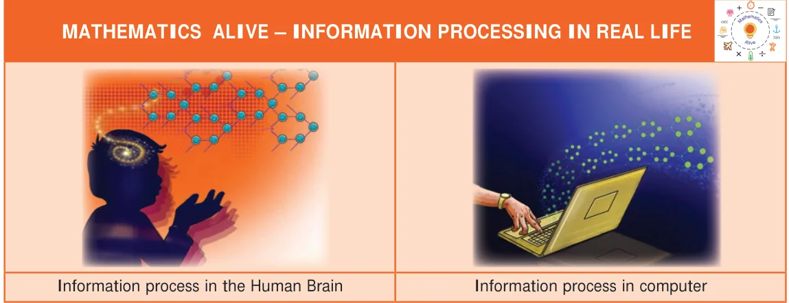
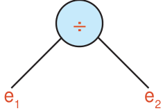
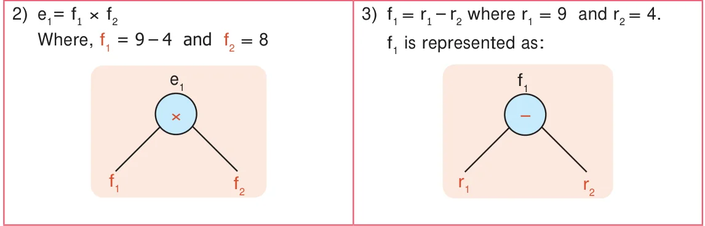
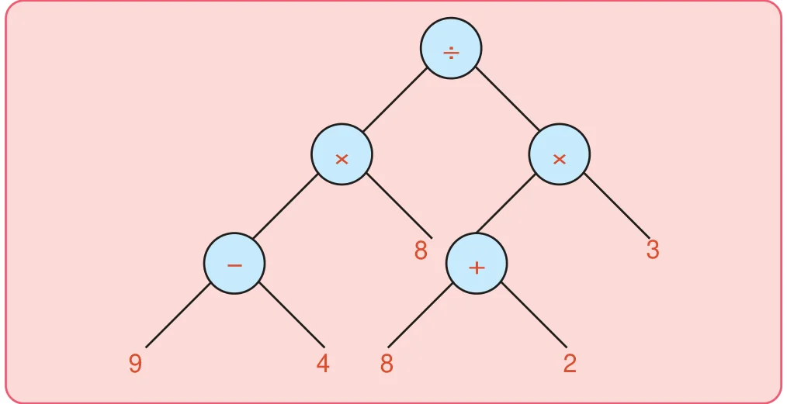
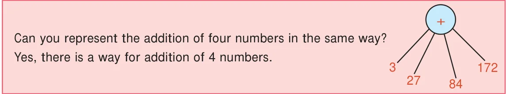
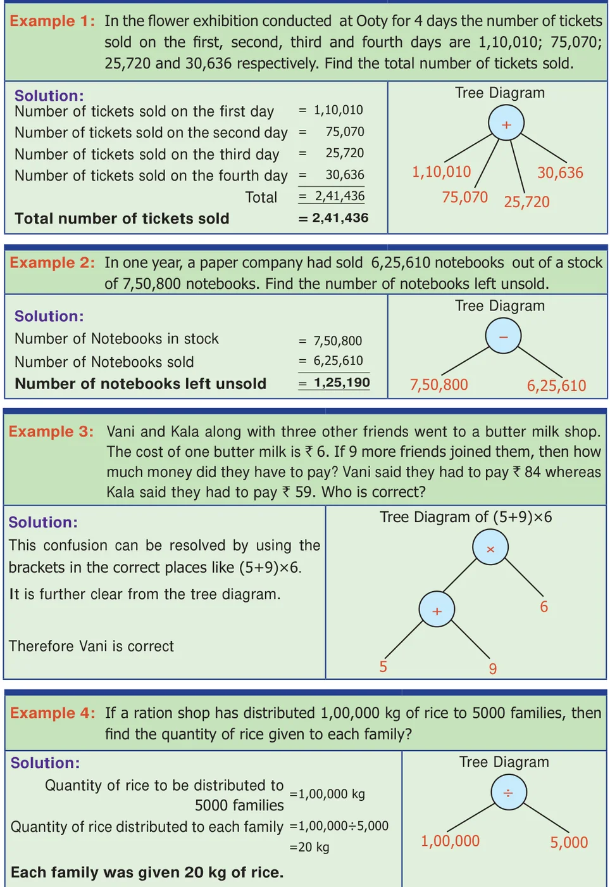
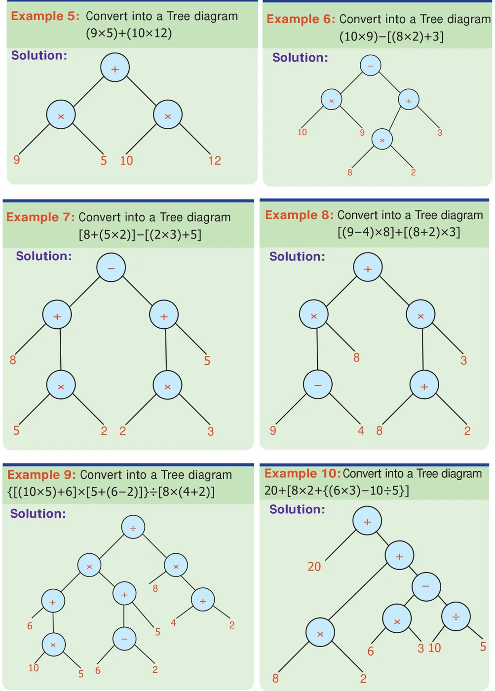

INFORMATION INFORMATION 5 PROCESSINGPROCESSING
CHAPTERCHAPTER
Learning Objectives
- ●To know how to represent numerical and algebraic expressions by tree diagrams.
- ●To know how to write numerical and algebraic expressions from tree diagrams.
In today's digital era, it is almost impossible to imagine a day without computers. Right from small shops to big software companies, the use of computers is inevitable. If there are no computers, most of the works will be stopped. Computers are able to find solutions even for complicated numerical expression and algebraic expression in quick and easy way. The answer given by the computer will be very precise and need not to be recalculated. There will be a question, how the computer read these expression? Yes, Computers use Tree diagram to perform billions of operations in a uniform way and gives the answer. In this chapter we will learn about the Tree diagram for both numeric and algebraic expressions.

Consider the numerical expression \([(9 - 4\) ) \(\times 8\) ] \(\div [(8+2) \times 3]\). We can try to understand the expression in a better way through the tree diagram.
- 1)Let us consider \(e_{1}= (9 - 4) \times 8\), \(e_{2} = (8+2\) ) \(\times 3\) we get


Similarly, the trees can be developed from e_{2}.
- 4)Putting all together, we get the following tree diagram

It is a picture which look like an upside-down tree! Every node has one or two
branches. And the leaves are numbers. The branching nodes have operations on them. It is called tree diagram and the tree diagrams are general ways of representing arithmetical expressions. Here trees are drawn upside down.
The root is at the top, the leaves are at the bottom. Since all the arithmetical
operations are binary (Involving two numbers) we have only 2 way branching in the tree.

Let us learn how to represent the statement problems in tree diagram

